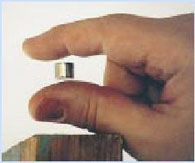

Decathalon Questionnaire
Section A
- Who is the only person to hold a patent on a chemical element?
- Which of the following are all leptons?
- electron, positron, photon
- proton, deuteron, neutron
- tau, muon, electron
- electron, proton, neutron
- What is the collective name for the asteroids that are co-orbital with Jupiter?
Section B
- Which is more harmful to a car battery: frigid winters or extreme summers and why?
- There are three types of batteries powering mobile phones in common use, what are they called?
Section C
- Describe the phenomenon in the image shown on the right side. 
Write the simplified logical expression for this output.A B C Y(output) 0 0 0 0 0 0 1 1 0 1 0 1 0 1 1 1 1 0 0 0 1 0 1 0 1 1 0 0 1 1 1 1 - Suppose sides of the triangles are resistors and their length is resistance, then how would you find angle bisector of the triangle?
Section D
- What is Green Buildings? Suggest some innovative ideas to enhance the present concept of green buildings.
- A buckling analysis has been requested of this simple C-channel structure. For clarity, look at the picture of the structure with the applied load. The load is in the positive X-direction and is applied through a beam element (simulating a large bolt) which is then connected to the plate elements via rigid links. The buckling analysis option is selected and the analysis proceeds. When the analysis completes, the first eigenvalue buckling mode is negative! For this particular model, the negative eigenvalue is -0.35. This would indicate a buckling load of -3500 lbf. Is this a valid result and what does it mean?
Section E
- What do you think about a sky-scraper that bends, when a plane comes for a head-on collision towards it? If you had already dismissed it as 'just' another crazy idea, well then, its your turn to be surprised, 'coz that's what designers, builders and architects are racking their brains after 9/11. With the technology of building and erection of structures advancing at a fast rate, and considering the rate of population increase, the only way for the future dwellings is to go up
and up, high above the ground...
In such a case, the idea of air-attack resilient structures gains unprecedented importance. So, here is the task for you:
Suggest some improvements in skyscrapers to make them air-attack resistant.
Hint : Try using contemporary technology ONLY.
Blessing : May your brains produce wildest and kraziest of ideas!!!
Section F
- You have a computer with Windows '98 installed on it. You do not have the password to login, at the startup. How do you still manage to bypass this hurdle, and login and use the computer with all the features?
- How do you change the appearance of startup and shutdown screens, in Windows '98?
- How do you modify the 'start' button? Say, write "Fire!" in the place of "Start"?
Section G
- Earlier clocks used a pendulum for running what do the present day analog (non-digital) clocks use?
- When you delete files from your computer and empty it out of recycle bin where exactly does it go?
- The San Francisco airport uses a very simple common concept to help it withstand earthquakes. What are we talking about?